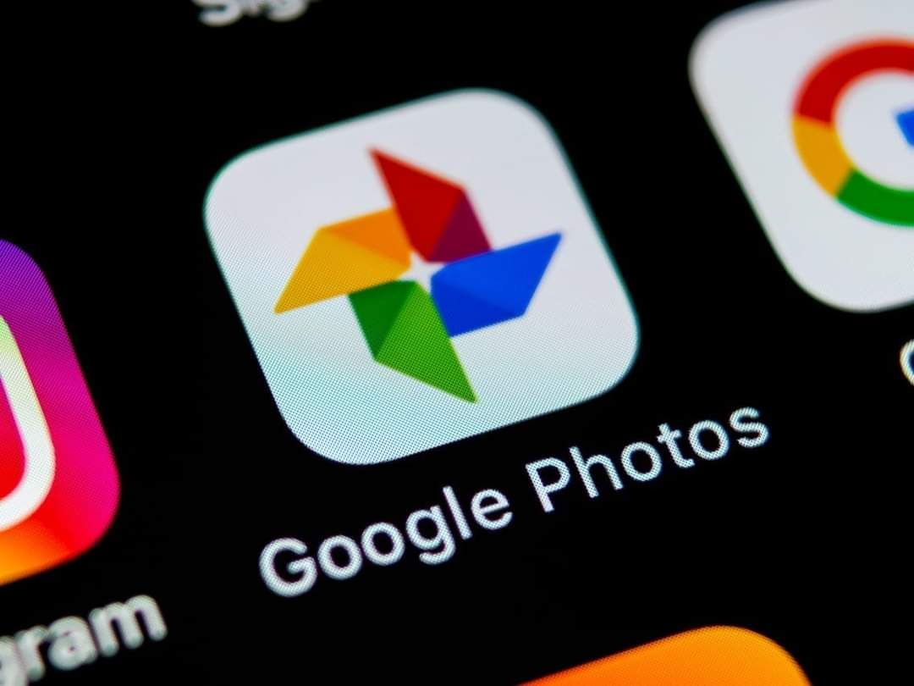
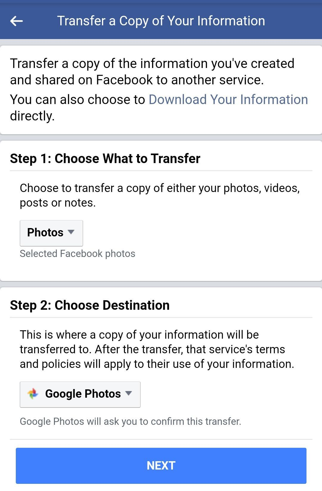

Viswa Prabha Writes...
നിങ്ങൾ എത്രയും പെട്ടെന്നു് ചെയ്തുതുടങ്ങേണ്ട ഒരു പ്രധാന കാര്യം:
ഈ വരുന്ന ജൂൺ ഒന്നുമുതൽ (2021 June 1) ഗൂഗിൾ ഫോട്ടോസിലെ അൺലിമിറ്റെഡ് സ്റ്റോറേജ് ഫീച്ചർ അവർ പിൻവലിക്കുകയാണെന്നു് അറിയാമല്ലോ.
അതിനുമുമ്പ് ഇനിയുള്ള അഞ്ചാറുദിവസംകൊണ്ട്, ഗൂഗിൾ ഫോട്ടോസ് കട അടയ്ക്കും മുന്നേ, നിങ്ങൾക്കു ചെയ്യാവുന്നവ:
1. നിങ്ങളുടെ പക്കലുള്ള എല്ലാ ഫോട്ടോകളും, അതെ എല്ലാ ഫോട്ടോകളും, ഗൂഗിൾ ഫോട്ടോസിലേക്കു് അപ്ലോഡ് ചെയ്യുക.
അതായതു്...
a. മൊബൈൽ ഫോണിൽ നിങ്ങൾ എടുക്കുന്നവ,
b. മറ്റുള്ളവർ അയച്ചുതന്നോ നിങ്ങൾ സ്വയം ഷൂട്ട് ചെയ്തതോ ആയ, നിങ്ങളിപ്പോൾ ഏതെങ്കിലും ഹാർഡ് ഡിസ്കിലോ സീഡിയിലോ ഫ്ലാഷ് ഡ്രൈവിലോ സേവ് ചെയ്തുവെച്ചിട്ടുള്ളവ,
c. ഫിലിം ക്യാമറകളിൽ എടുത്തു് ആൽബത്തിൽ സൂക്ഷിച്ചുവെച്ചിട്ടുള്ള പഴയ തരം പേപ്പർ ഫോട്ടോകൾ
d. ഈ-മെയിൽ ബോക്സിലോ ഗൂഗിൾ ഡ്രൈവിലോ ഡ്രോപ് ബോക്സിലോ മറ്റോ ശേഖരിച്ചുവെച്ചിട്ടുള്ളവ
ഇതുപോലെ, നിങ്ങൾക്കു് ഭാവിയിലേക്കു് ആവശ്യം വരുമെന്നു തോന്നുന്ന ഏതു ഫോട്ടോയും,
ഗൂഗിൾ ഫോട്ടോസിലേക്കു് അപ്ലോഡ് ചെയ്തു വെയ്ക്കുക.
photos.google.com എന്ന സൈറ്റിൽ നിങ്ങളുടെ ജീമെയിൽ ഐഡി ഉപയോഗിച്ച് ലോഗ് ഇൻ ചെയ്യുക. അവിടെ സെറ്റിംഗ്സിൽ രണ്ടുതരത്തിൽ സേവ് ചെയ്യാനുള്ള ഓപ്ഷൻ കാണാം. ഒന്നുകിൽ ഒറിജിനൽ ഫയൽ ആയി. അല്ലെങ്കിൽ ഹൈ ക്വാളിറ്റി ആയി.
ഇതിൽ ഹൈ ക്വാളിറ്റി എന്ന ഓപ്ഷൻ എടുത്താൽ നിങ്ങളുടെ 15 GB എന്ന സ്റ്റോറേജ് പരിധി ബാധകമല്ല. എത്ര ലക്ഷം ഫോട്ടോകൾ വേണമെങ്കിലും ഒരൊറ്റ ഗൂഗിൾ ഐഡിയിൽ തന്നെ സ്റ്റോർ ചെയ്യാം.
(എന്റേതു് എത്ര ലക്ഷം വരുമെന്നു് എനിക്കുതന്നെ പിടിയില്ല. കഴിഞ്ഞ നാലഞ്ചുവർഷമായി നിരന്തരം അപ്ലോഡ് ചെയ്തുകൊണ്ടിരുന്നിട്ടും ഇപ്പോഴും ജോലിമുഴുവനായിട്ടില്ല!)
ഈ സൗകര്യം 2021 ജൂൺ 1 വരെ മാത്രമേ ഉള്ളൂ. അതു കഴിഞ്ഞാൽ, ജീമെയിൽ ബോക്സ്, ഗൂഗിൾ ഡ്രൈവ്, ഗൂഗിൾ ഫോട്ടോസ് എല്ലാം ചേർത്തു് 15 GB എന്ന പതിവുപരിധി ബാധകമാവും.
എന്നാൽ ജൂൺ 1 കഴിഞ്ഞാലും അതിനുമുമ്പ് സ്റ്റോർ ചെയ്തു വെച്ചിട്ടുള്ള ഫോട്ടോകൾ, അതെത്രയെണ്ണമുണ്ടെങ്കിലും, സുരക്ഷിതമായി പിന്നീടും ലഭ്യമാവും. അവ ഇപ്പറഞ്ഞ 15 GB പരിധിയിൽ ഉൾപ്പെടില്ല.
അതുകൊണ്ടു് ഇന്നുമുതൽ ജൂൺ ഒന്നുവരെയുള്ള ഏതാനും ദിവസങ്ങൾ ഈ സൗകര്യം കഴിയാവുന്നത്ര പ്രയോജനപ്പെടുത്തുക.
എന്റെ ഫോട്ടോകളൊക്കെ എന്റെ സ്വന്തം ഹാർഡ് ഡിസ്കിൽ സുരക്ഷിതമാണെന്നു് തെറ്റിദ്ധരിക്കാതിരിക്കുക. നിങ്ങളുടെ ഹാർഡ് ഡിസ്ക് ഏതുനിമിഷവും അടിച്ചുപോവാം. അങ്ങനെ എത്രയും വിലപ്പെട്ട പതിനായിരക്കണക്കിനു ഫോട്ടോകൾ നഷ്ടപ്പെട്ടിട്ടുള്ള സ്വന്തം അനുഭവത്തിൽനിന്നാണു പറയുന്നതു്.
ഗൂഗിൾ ഫോട്ടോസിൽ അപ്ലോഡ് ചെയ്താൽ എന്റെ പ്രൈവസി പോവില്ലേ എന്നാണു സംശയമെങ്കിൽ, ഒന്നുകിൽ നിങ്ങൾക്കു് ഈ സൗകര്യം ഉപയോഗിക്കാതിരിക്കാം. അല്ലെങ്കിൽ ഞാനടക്കം ഭൂരിഭാഗം ഇന്റർനെറ്റ് ഉപയോക്താക്കളും ചെയ്യുന്നതുപോലെ, “എനിക്കു ദ്രോഹകരമായ വിധത്തിൽ ആ ഫോട്ടോകൾ ഗൂഗിൾ തെറ്റായി ഉപയോഗിക്കില്ല“ എന്നു് ഒട്ടൊക്കെ അന്ധമായിത്തന്നെ വിശ്വസിക്കാം. ഫേസ്ബുക്കും ജീമെയിലും ഒക്കെ ഉപയോഗിക്കുന്നവർക്കു് ക്ലൗഡ് ഡാറ്റാബേസിലെ പ്രൈവസി റിസ്കിനെപ്പറ്റി പരാതിപ്പെടാൻ ഒരവകാശവുമില്ല.
ഒരിക്കൽ ചിത്രങ്ങൾ ഗൂഗിൾ ഫോട്ടോസിൽ ചേർത്തുകഴിഞ്ഞാൽ ഒരുപാടൊരുപാടു് ഗുണങ്ങളുണ്ടു്. നിലവിൽ AI സാങ്കേതികവിദ്യ ഏറ്റവും ഫലപ്രദമായി ഉപയോഗിക്കുന്നതായി എനിക്കറിയാവുന്ന ഇടം ഗൂഗിൾ ഫോട്ടോസിലെ ആർട്ടിഫിഷ്യൽ ഇന്റലിജൻസ് ഫീച്ചറുകളാണു്.
അതേക്കുറിച്ചെല്ലാം പിന്നീടു പറയാം.
2. ഒരു കാര്യം കൂടി:
നിങ്ങൾ ഇതുവരെ ഫേസ്ബുക്കിൽ നിങ്ങളുടെ ടൈംലൈനിൽ അപ്ലോഡ് ചെയ്ത എല്ലാ ഫോട്ടോകളുടേയും വീഡിയോകളുടേയും പോസ്റ്റുകളുടേയും ഒരു ബാൿ അപ് വേണ്ടേ? നാളെ എന്തെങ്കിലും കാരണവശാൽ ഫേസ് ബുക്ക് മൊത്തമായി നിന്നുപോവുകയോ നിരോധിക്കപ്പെടുകയോ അഥവാ നിങ്ങളുടെ സ്വന്തം ഐഡി ഹാക്ക് ചെയ്യപ്പെടുകയോ ബ്ലോക്ക് ചെയ്യപ്പെടുകയോ ചെയ്താലോ?
അങ്ങനെ സ്വന്തം ഹാർഡ് ഡിസ്കിലേക്കു് സേവ് ചെയ്തു് ബാൿ അപ് എടുക്കാൻ ഫേസ്ബുക്കിൽ സൗകര്യമുണ്ടെന്നു് മുമ്പേ പല തവണ ഞാൻ എഴുതിയിട്ടുണ്ടല്ലോ. എന്നാൽ, അതും കൂടാതെ, ഫേസ്ബുക്കിൽ നിന്നു് നേരേ ഗൂഗിൾ ഫോട്ടോസിലേക്കും ബാൿ അപ് എടുക്കാം.
വരുന്ന ജൂൺ ഒന്നിനുമുമ്പ് അങ്ങനെ ചെയ്യുന്നതു് എത്ര ഗുണകരമായിരിക്കും എന്നു് ഇനി പറയേണ്ടല്ലോ.
ഇതു ചെയ്യേണ്ടതെങ്ങനെ എന്നു് വിശദമായി വിവരിക്കുന്ന ഒരു വെബ് പേജ് ലിങ്ക്:
https://www.androidcentral.com/how-move-your-facebook-photos-and-videos-google-photos
ഫേസ്ബുക്ക് ഡാറ്റാ ട്രാൻസ്ഫർ ചെയ്യാനുള്ള ലിങ്ക്:
https://www.facebook.com/dtp/

https://petapixel.com/2020/11/11/google-to-kill-free-unlimited-storage-for-high-quality-photos/
ഇതുപോലെത്തന്നെ വീഡിയോകളും ട്രാൻസ്ഫർ ചെയ്യാം. ടെക്സ്റ്റ് കുറിപ്പുകളാണെങ്കിൽ, ഫേസ്ബുക്കിൽ നിന്നു് ഗൂഗിൾ ഡോക്യുമെന്റ്സിലേക്കോ വേർഡ്പ്രസ്സിലേക്കോ ഡ്രോപ് ബോക്സിലേക്കോ സ്ഥലം മാറ്റി ബാൿ അപ് എടുത്തു സൂക്ഷിക്കാവുന്നതാണു്.
അതിനുമുമ്പ് ഈ പോസ്റ്റ് കൂട്ടുകാർക്കെല്ലാം വേണ്ടി ഷെയർ ചെയ്തോളൂ.
എന്നിട്ട് സ്വന്തം ടൈംലൈനിൽ, സ്വന്തം ഗൂഗിൾ ഫോട്ടോസിൽ, എത്രയും പെട്ടെന്നു് പണി തുടങ്ങിക്കോളൂ!
© Android Community Group